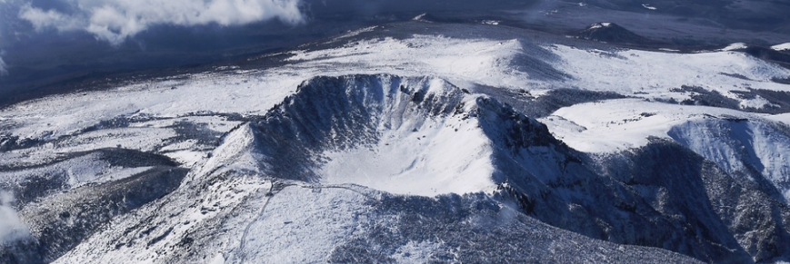

본문콘텐츠영역
Jeju Island is an island created by about 110 volcanic activities during the Cenozoic Era. The foundation was laid during the first eruption period, and the primitive Jeju Island was formed during the second eruption period.
Jeju Island is characterized by an oceanic climate, with high temperatures and heavy rainfall, and also has subtropical vegetation. Hallasan has temperate, subtropical, and arctic climate zones, and over 1,800 species of plants form a vertical distribution zone.
Jeju Island is the only region on the Korean Peninsula where temperatures never drop below zero even in the middle of winter. It receives plenty of sunlight and has smooth drainage, making it an optimal region for growing tangerines. Citrus fruits, a specialty of Jeju Island, are collectively called Jeju tangerines, and the main varieties of Jeju tangerines include Hallabong, Cheonggyeon, Cheonhyehyang, and Lee Yegam.
A place you can't miss in Jeju
-
- Yongmeori Coast
- It is called Korea's Grand Canyon and is called Yongmeori Beach because it resembles a dragon's head entering the sea. Entry is only possible when the weather permits.
-

- Halla Mountain
- It is a volcano located in the center of Jeju Island, the highest in South Korea at 1,950m above sea level, and at the summit is Baeknokdam, a volcanic lake with a diameter of 551m.
-
- Hyeopjae Beach
- It is a beautiful beach with emerald sea and silver sand. It has a gentle slope, shallow water, and a pine forest, making it a good vacation spot for families with children.
Jeju activities that make you lose track of time
-
- SURFING
- Jeju Island is a great place for surfing, boasting beautiful natural scenery and suitable for beginners and advanced surfers alike.
-
- paragliding
- Activities in Jeju are not limited to the sea. Let’s enjoy paragliding with Jeju’s nature unfolding beneath your feet.
-
- diving
- This is a place where you can enjoy various diving activities such as snorkeling, free diving, and scuba diving.
-
- Atv
- This is an experience where you can fully experience the nature of Oreum, and enjoy the fun of seeing the natural scenery and running at the same time.
Meet Jeju's folk songs and drone-shot videos anytime, anywhere


Yongcheon Cave
Chunjeyeon Waterfall

Sunrise on Mt. Halla
Marado Island

Yongnuni Oreum

Muljangori Oreum
-
gallery
Various landscapes and lifestyles of Jeju Island